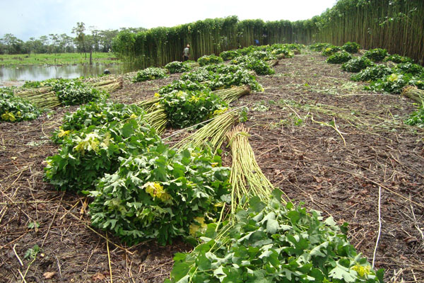

A economia da região Norte do Brasil é basicamente composta por atividades ligadas ao setor primário, com destaque para o extrativismo (vegetal, animal e mineral) e a agricultura. A região é considerada uma fronteira agrícola do Brasil, onde são produzidos desde produtos tradicionais, como mandioca, milho e arroz, até produtos de exportação, como a soja, que tem sido bastante difundida na região e, ao mesmo tempo, a que mais provoca o desmatamento da floresta Amazônica. Além disso, áreas cobertas por soja tendem a diminuir os índices pluviométricos em cerca de 15%. As pastagens causam uma diminuição de cerca de 3,9%, pode parecer pouco, mas é preocupante, já que a expansão da agropecuária ocorre de maneira geométrica e, se a ocupação para essa atividade continuar nesse ritmo, o clima da região (quente e úmido) será afetado, comprometendo o ecossistema.
Nessa região do Brasil são cultivados produtos tradicionais, como a juta e a pimenta-do-reino, trazidos para a região por imigrantes, sobretudo japoneses. No entanto, o cultivo atualmente é feito por descendentes. O Pará é o maior produtor da região e do país, com 80% ou 27 toneladas por ano. As plantações estão concentradas em regiões periféricas de Belém. A juta, planta da qual se obtém fibras, tem como maior produtor o Estado do Amazonas.
O cultivo de alimentos é, sobretudo, em propriedades rurais de pequeno porte, nas quais são criadas plantações por meio de mão-de-obra familiar e de técnicas rudimentares, o que resulta em uma baixa produtividade. O calendário lunar para o plantio é de 18 de Janeiro até 08 de Dezembro. Os produtos incluem mandioca, arroz, feijão e milho, com o objetivo de suprir a família do produtor e comercializar no mercado local. Em geral, os índices de produtividade da agricultura nortista são baixos em comparação com outras regiões do país.